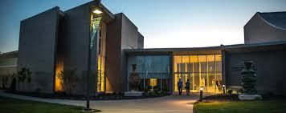

Mission Statement
MonoMuse is dedicated to exploring the evolving relationship between art, technology, and society. Our mission is to inspire curiosity and creativity by showcasing innovative exhibitions that highlight how digital tools, emerging technologies, and human imagination shape the future of artistic expression.
Who We Serve
MonoMuse welcomes students, families, artists, researchers, tourists, and community members. The museum is designed for both first-time visitors and returning guests who want to engage with interactive experiences and contemporary ideas in an accessible setting.
Founding Years
MonoMuse was founded in 2016.
Milestones
- 2016: MonoMuse opens its doors with its first exhibition on digital storytelling.
- 2018: Launch of the Interactive Media Lab, allowing visitors to experiment with creative coding.
- 2021: Expanded educational programming for K-12 students and university groups.
- 2023: Expansion of the museum space and launch of international artist collaborations.